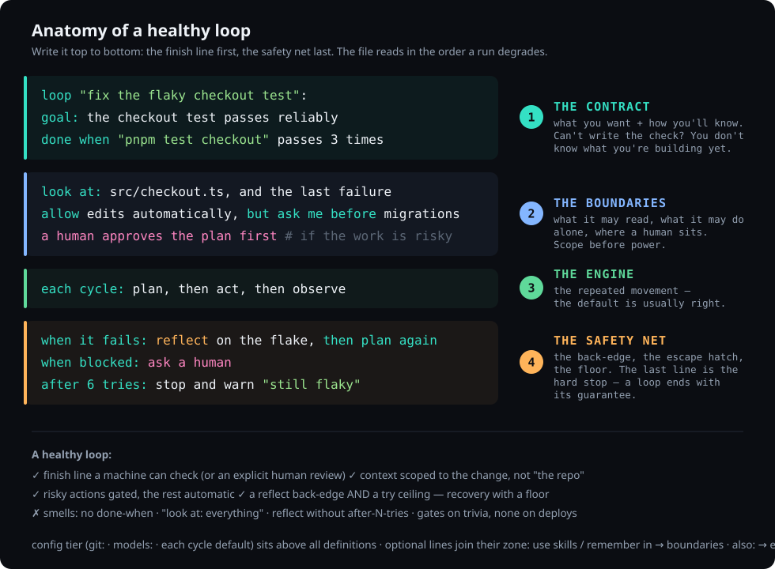

done when→
Stop babysitting the agent.
LoopFlow is a small natural-language DSL for loop engineering. A .loop file describes a self-correcting, human-gated coding workflow — its objective, the context it may read, the actions it may take, how it verifies itself, and when it stops. This page teaches the whole language from the first line to full A-to-Z pipelines, every section grounded in a real example you can run.
loop "add API rate limiting":
goal: requests are rate-limited per API key
done when "pnpm test rate-limit" passes
look at: the API middleware, and the last failure
allow edits automatically, but ask me before pushes
each cycle: plan, then act, then observe
when it fails: reflect, then plan again
after 6 tries: stop and warn "thrashing"npx @loop-lang/loop init # /loopflow skill + AGENTS.md + the loop-first default
# then just ask — no slash needed for loop-shaped work:
fix the flaky checkout test — keep at it until the suite passes reliablyinit teaches Claude to reach for a .loop on its own when the work is repeatable + verifiable — and to skip the ceremony for one-off edits. /loopflow is the explicit override. Watch it plan → act → observe, reflect on a red test, and stop only when the check is green. Skeptical? → Why not just prompt? · Full setup in Getting started.
What is a loop basic
AI writes the code now — but you are still the conductor. Every coding task is really five decisions:
| Decision | In a .loop | Question it answers |
|---|---|---|
| Objective | goal: | What are we trying to do? |
| Context | look at: | What may the agent read first? |
| Actions | allow… / ask me before… | What may it do, and what needs a human? |
| Verification | done when | How do we know it worked? |
| Stopping | when… / after N tries | When do we stop — done, or thrashing? |
These five are the core syntax — the engine. Everything else in the language either composes loops into bigger workflows (pipeline, flow, for each) or configures a run (the rest of the syntax) — you'll meet those after the core.
Here are all five decisions as one real loop — every line is one of the rows above:
loop "fix the failing test": # the work
goal: the cart total is correct with a coupon # Objective
look at: the checkout code, and the last failure # Context
allow edits automatically, ask me before pushes # Actions
done when "pnpm test cart/coupon" passes # Verification
after 6 tries: stop and warn "stuck" # Stopping- Edit the loop, not the prompt. The control structure is the artifact.
- You can't fake done.
done whenruns a real command — a test, a scanner, a script. The loop stops only when the world agrees.
Anatomy — write it in this order the standard
The parser doesn't care what order the lines come in. You should. The standard is one sentence: the finish line first, the safety net last. Four zones, top to bottom — and the file ends up reading in the same order a run degrades: promises at the top, failure handling at the bottom.

- The contract —
goal:, thendone whenimmediately under it. Write the check before any behavior — this is loop engineering's TDD. If you can't write the check, you don't know what you're building yet; that's the signal to stop and think, not to keep typing. Everything below exists to make this line pass. - The boundaries —
look at:(what it may read), thenallow …, ask me before …(what it may do alone), then any human gate. Scope before power. Decide gates now, while you're thinking about risk — not later, while you're thinking about behavior. Capability lines (use skills,remember in) live here too. - The engine —
each cycle:. Usually the defaultplan, then act, then observe, written out so a reader sees the shape.also:finishing passes join this zone. - The safety net —
when it fails:(recovery),when blocked:(the escape hatch),after N tries:(the floor) — in escalation order. The last line of a loop is its hard stop: the file literally ends with the guarantee that it can't spin forever.
Why done when second and not last? Because it shapes every other line — the context you scope, the actions you allow, the try ceiling are all sized to the check. Written last, done when describes whatever the loop happened to do; written first, the loop is built to satisfy it. Same reason tests-before-code works.
- A finish line a machine can check — or an explicit
a human reviews before stopping. Never neither. - Scoped context: the three files that matter +
the last failure— not "the repo". - Gates on risk, autonomy on the rest. Gating trivia trains you to rubber-stamp.
- Recovery and a floor:
reflect, then plan againalways paired withafter N tries. - Smells: no
done when· unboundedlook at· a back-edge with no ceiling · a warn message that won't tell future-you what got stuck.
The same order applies inside every stage of a pipeline — each stage is a loop and reads as one. Full reference tables in the manual.
Prompt vs LoopFlow — why not just prompt? why
You could just say "fix the bug." So why write a loop? A prompt fires once and trusts the model's word that it's done. A loop verifies, self-corrects, and stops only when the work is provably finished.
| Just prompting | A loop | |
|---|---|---|
| "Done" means | the model says "done" | a real command passes — done when "…" |
| On failure | you notice, re-prompt, repeat | reflects on the failure, re-plans automatically |
| Stops | when the model stops typing | when the check is green — or warns after N tries |
| Risky actions | hope it asks first | gated; never pushes to main/master |
| Scope | wanders the codebase | look at: keeps it in your module |
| Repeatable | re-type it, get drift | re-run the same file, same shape |
| Shareable | a paragraph in Slack | a .loop in the repo, reviewable in a PR |
Same task, both ways
The prompt:
src/checkout and make sure nothing else breaks."→ the agent edits, replies "Done — fixed the rounding." Did
checkout.spec.ts::tax actually pass? The whole suite? You re-run it yourself. Failed? Re-prompt. (And it may have run git push on the way.)The loop:
loop "fix the checkout tax test":
goal: the checkout tax test passes with no regressions
done when the test "checkout.spec.ts::tax" passes
look at: the checkout code, and the last failure
each cycle: plan, then act, then observe
when it fails: reflect, then plan again
after 6 tries: stop and warn "tax fix thrashing"Runs the test every cycle. Fails → reflects on why → fixes again. Stops only when the test is green (or warns after 6). Works on a branch, never touches main. The same file works tomorrow, and a teammate can read exactly what "done" meant.
- Prompting asks for an answer. A loop guarantees a result.
vs Claude Code's /loop and /goal why
Claude Code already has two looping built-ins — they're useful, and they're not the same tool. /loop is a scheduler (re-run a prompt every few minutes). /goal is the closest cousin: keep going until a condition holds. The catch with /goal — its condition is judged by a fast model reading the transcript; it can't run your test or open a file. So "done" is what the model says, not a command that passed.
Full side-by-side table: the FAQ.
/loop— polling and cadence ("check the deploy every 5 minutes")./goal— a quick, throwaway "keep going until it looks done" in this session.- LoopFlow — when "done" must be provable, the loop must self-correct, a human gates the risky step, and you want to keep and reuse the workflow. A
.loopis/goalwith a real check, a retry, a gate, and a file.
Getting started setup
That's the why. From here down is the deep dive — set LoopFlow up once, then learn the language line by line.
Prerequisites: Node 18+, the Claude Code CLI, and a git repo. The primary surface is a Claude Code chat — /loopflow writes and runs the loop with you, gates answered inline. One command installs everything:
1 · Install with npm
From your repo, run the installer. In one step it writes the /loopflow skill, AGENTS.md (the full language reference), and a gated loop-first default into CLAUDE.md:
npx @loop-lang/loop init # install into this repo (add --cursor / --copilot for those agents too)
npx @loop-lang/loop init --global # or: install the /loopflow skill for every repoThe default means you rarely type the slash. Ask for something repeatable and verifiable — "fix this flaky test until it's reliably green" — and Claude authors + runs the .loop on its own. Ask a one-off question or a trivial edit and it just… does it, no loop ceremony. The gate is AGENTS.md's four-condition test (repeats? "done" checkable? iterations affordable? self-verifiable?); /loopflow remains the explicit override in both directions.
That writes a handful of plain files into your repo — nothing hidden, all yours to read and edit:
your-repo/
├─ AGENTS.md # the Loop language reference — every agent reads it
├─ CLAUDE.md # the gated loop-first default (reach for a .loop when work is repeatable + verifiable)
├─ loop.config # settings — live=false (dashboard off until you opt in)
├─ .claude/skills/loopflow/
│ └─ SKILL.md # the /loopflow skill — author + run loops in chat
├─ examples/
│ └─ fix_test.loop # a starter loop to run
└─ templates/ # best-practice starter loops — copy & edit
├─ README.md # index of the templates
├─ bugfix.loop feature.loop brownfield-feature.loop refactor.loop
├─ cicd-check.loop security.loop clean-architecture.loop
├─ test-coverage.loop review-diff.loop
├─ greenfield-app.loop load-spec.loop # (+ discover, design, story-template)
└─ sprint.yaml plan.md # starter spec data to replace with yours--global puts the skill in ~/.claude/skills/ instead (every repo); add --cursor / --copilot for those agents' pointer files, or --no-templates / --no-example to skip. Nothing is overwritten on re-run unless you pass --force.
That gives you two things at once. /loopflow is now available in a Claude Code chat here. And AGENTS.md sits at the repo root — it travels with the project, so any agent that opens the repo already knows the LoopFlow language; it's the project's persistent memory of how to write a .loop. (Methods are shared the same way: use the <X> method pulls in a .loop preset another repo can reuse.)
2 · Run your first loop — in a Claude Code chat the main way
/loopflow fix the failing auth test in src/auth, gate any database migration # writes a .loop
/loopflow run examples/fix_test.loop # runs it, in the chatThis is how most people use LoopFlow. Describe the work and the skill writes the .loop; name a file and it runs the loop natively in the session — you watch every plan → act → observe → reflect step and answer human gates right in the chat, and (when enabled) a live browser dashboard tracks where you are. Prefer a terminal? The same files run headless via the CLI (loop-run run <file>) — see Running a loop.
That first command writes a file like this — yours to read, edit, and re-run:
# /loopflow "fix the failing auth test in src/auth, gate any database migration" writes:
loop "fix the failing auth test":
goal: the auth suite passes in src/auth
done when "pnpm test src/auth" passes
look at: the auth code, and the last failure
ask me before migrations
each cycle: plan, then act, then observe
when it fails: reflect, then plan again
after 6 tries: stop and warn "stuck"Before running a loop you didn't write, print its shape: loop-run show <file>.loop — a missing done-when or thrash guard is obvious in the ASCII.
git: block, LoopFlow works on a branch and commits when the goal is met, and never pushes to main/master — see the git keyword.Rather learn hands-on?
Four guided ways to get the language into your fingers before the deep dive below:
done when — how a loop verifies itself basic
The predicate is the spine of the whole idea. Four forms:
loop "the four forms":
goal: one loop, all four verification forms
done when the test "billing.spec.ts::apostrophe" passes # a named test (runs via your test runner)
done when "pnpm test" passes # a shell command, success = exit 0
done when "semgrep --severity=high" finds nothing # exit 0 AND empty output
done when a human confirms "the UI looks right" # a person is the check- A predicate is a real command run with your privileges — like an npm script or a Makefile target. So treat a
.loopfrom an untrusted source as you would their shell scripts. finds nothingis how you say "this scanner must report zero" — it requires both exit 0 and empty output.- Feed the error forward: end
look at:withand the last failure— reflect diagnoses the miss, but the next plan only sees it if you pass it in. - The
a human confirms "…"form is decided by a person — it's satisfied when you run the loop in conversation; the headless shell verifier returnshuman check required: …and never passes on its own. - A loop with no
done whenhas no machine check, so it must finish through a human path — a review gate, an approved plan-first pass (a plan-only loop), or an explicitwhen …: stop— otherwise it runs to the hard cap. Always give it a real check when one exists.
Why "done" can't be faked the trust model
The most common question about LoopFlow: the model says it's done — why should I believe it? You shouldn't. Nobody asks the model. The verdict never comes out of the model's mouth.
At the observe step, the runtime — plain deterministic code, not the LLM — spawns your check as a real OS process and reads the exit code from the operating system. Exit 0 = pass. Anything else = fail. Between cycles the model can claim whatever it likes; the loop stops only when the process your machine ran returns 0. The model does the work. The OS grades it.
The forces that decide "done", stacked worst-case to best-case:
| Force | What it defends against | The line |
|---|---|---|
| The exit code | the model's own claim of success | done when "pnpm test" passes |
| Output emptiness | a scanner that "passed" by printing warnings | done when "semgrep …" finds nothing |
| The conjunction | passing one check while failing another — all done when lines must pass | list several |
| The flake guard | one lucky green on a flaky test | passes 3 times |
| The judge panel | a single LM judge's generous moment, on subjective work | the skill "review" approves by 3 judges — independent verdicts, majority wins, every vote logged |
| The trajectory eval | the agent gaming the check itself — e.g. weakening a test to go green | approves on the trajectory + the bar: didn't weaken a test to pass |
| Action gates | the agent touching what it shouldn't to get to green | ask me before editing tests |
| The try ceiling | an unfixable goal burning tokens forever | after 6 tries: stop and warn "…" |
- The agent can't fake an exit code — but it could try to game the check itself (weaken the test, hard-code the answer). That's exactly what the bottom half of the table exists for: gate test-file edits, demand repeat greens, and put a trajectory judge on how it got there, not just that it did.
- Your check runs with your privileges, in the loop's working directory, with your shell env — a test runner that exits 0 on failure will make the loop lie to you. The check is the loop's definition of reality; write it like you mean it.
Full mechanics — every factor that can flip a verdict (working dir, env, truncation, the npm-test desugar) — in the manual.
Context & knowledge — what the agent reads context
Give the agent the right material before it plans. Each input carries a distinct intent, so the agent knows what it may change and what it must only learn from.
| Line | Intent |
|---|---|
look at: (alias in:) | Files it reads and may edit. Add and the last failure to feed the previous error forward. |
knowledge: | Read-only reference (docs, diagrams) it must not edit. |
examples: | Reference patterns to imitate — "build it like these". |
use skills: | Named skills it may invoke while planning/acting. |
use skills recommended by ctx | Let ctx resolve + install the right skill bundle for the goal before the first plan (needs the ctx MCP server; inert without it). Reference: the manual. |
use tools from the "x" server | An MCP server whose tools it may use. |
loop "add the webhooks endpoint":
goal: POST /webhooks matches the house style
look at: routes/
knowledge: docs/webhooks-spec.md, the architecture diagram
examples: routes/payments.ts, routes/users.ts
use tools from the "github" server
check: pnpm test webhooksThe cycle and the reflect back-edge intermediate
each cycle: lists the steps, in order — any subset of plan, act, observe:
each cycle: plan, then act, then observe # full self-correcting unit
each cycle: act, then observe # skip planning — just do + check- plan — read the
look at:files, decide the smallest change toward the goal. (Runs read-only.) - act — make the change, honoring the policy.
- observe — run the
done whencheck and read pass/fail.
On a failed observe, when it fails: reflect, then plan again fires. reflect reads the failure output and writes a short diagnosis; that diagnosis becomes context for the next plan. This is the back-edge — the orange arc in the diagram — and it's the difference between an agent that retries blindly and one that learns from each miss.
Human gates human-in-the-loop
Four lines put a person in the loop — approve the plan, review before stopping, gate a stage, unblock when stuck — plus the per-run confirm you already met in ask me before … (asked once, then remembered). The four lines:
loop "gated work":
goal: a person at every risky step
a human approves the plan first # approve the plan before any acting
a human reviews before stopping # judge the result before the loop may stop
a human approves before provisioning # a hard, blocking gate (used on a stage)
when blocked: ask a human # unblock when the agent is stucka human approves the plan first— high-stakes work where the plan must be right before touching anything.a human reviews before stopping— subjective "looks right" goals (UI, copy) where no command can decide done.a human approves before <X>— a blocking gate before a whole stage runs (deploys, provisioning).
Composing — pipeline, flow, for each scaling up
One loop handles one job. Three constructs scale it up — each a keyword with its own reference page:
pipeline— runstages in order; a failing stage halts the rest. An epic → a pipeline, each story → a stage. (Example below.)flow— chain whole.loopfiles; each step's summary carries forward (discover → design → build).for each— run a template loop once per item in a YAML/Markdown plan — A-to-Z over every story.
pipeline "ship feature":
stage security:
goal: no high or critical vulnerabilities
done when "semgrep --severity=high" finds nothing
each cycle: plan, then act, then observe
when it fails: reflect, then plan again
stage build:
goal: feature works and tests pass
a human approves the plan first
each cycle: act, then observe
done when "pnpm test" passes
stage ui:
goal: matches design, responsive at 375px
each cycle: plan, then act, then observe
a human reviews before stopping
stage deploy:
a human approves before provisioning
goal: infra live and healthchecks green
done when "./scripts/health.sh" passes
each cycle: act, then observeThe full grammar — pipelines, flow chains, and for each iteration, with worked examples — is in the manual and the keyword reference.
The rest of the syntax beyond the core
The five decisions (plus the cycle) are the whole engine. Everything else in the language either composes loops into bigger workflows or configures a run — none of it changes how a single loop thinks. Here's the rest at a glance; each construct links to its keyword reference page.
| Construct | What it does |
|---|---|
| Compose — scale one loop into many | |
pipeline · stage | Run stages in order; a failing stage halts the rest. An epic → a pipeline, a story → a stage. More ↑ |
flow · run / then run | Chain whole .loop files; each step's summary carries forward (with the result of picks a specific earlier step). |
for each … in | Run a template loop once per item in a YAML/Markdown plan — A-to-Z over every story. |
| Augment a loop | |
use skills: | Named skills the loop may invoke during plan/act — coordinate proven skills instead of one mega-prompt. |
remember in | Cross-run memory: read past lessons on start, append the run's outcome on stop, so the loop improves over time. |
also: | Extra finishing passes run after the goal is met (skipped on failure). |
plan from "file" | Execute a plan you wrote instead of one the agent generates. |
| Ops & reuse — configure the run | |
git: | Version-control policy — branch / commit cadence / push / PR. Never pushes to main by default. |
models: | Tier the model by phase — a fast model to plan/reflect, a strong one to act. |
use the X method | Import a reusable preset (its own .loop) that another repo can share. |
schedule: · target: · notify: | The config tier — when it runs, where it runs, and who to tell when it's done. |
In practice — real workflows walkthroughs
You don't write LoopFlow all day. You reach for it when a task has a clear "done." Here's how it slots into the work you already do.
A ticket from Jira (the daily driver)
You picked up PROJ-412 — "Applying a coupon can make the cart total negative." Turn the ticket into a loop:
- Describe it. In the chat:
/loopflow PROJ-412: a coupon must never make the cart total negative; done when "pnpm test cart/coupon-floor" passes— the skill writes the.loop. (Or write it yourself — the ticket's acceptance criterion becomesdone when, in plain words.) - What it produces:
loop "PROJ-412: coupon must not make the cart total negative":
goal: applying a coupon never produces a negative cart total
done when "pnpm test cart/coupon-floor" passes
look at: the cart total logic and the coupon code, and the last failure
allow edits automatically, but ask me before migrations or pushes
each cycle: plan, then act, then observe
when it fails: reflect on which layer broke, then plan again
after 6 tries: stop and warn "PROJ-412 thrashing — check the spec"- Run it:
/loopflow run proj-412.loop. Watch plan → act → observe; answer the migration confirm if it asks. - It lands on a branch and commits when the test passes (the default git). Add a
git:block withpush when done+open a pull requestto get a PR — paste that link back into the ticket.
done when has something real to check.You already have a spec — PRD + sprint.yaml (the BMAD flow)
The other everyday shape: the thinking is done. A PRD (plan.md) and a story backlog (sprint.yaml) already exist — from BMAD, from a planning session, from your PM. You don't want a loop to re-plan the product; you want it to deliver the backlog, story by story, with the same checklist every time. That's what for each is for:
- Grab the two-file kit. Copy
templates/load-spec.loop+templates/story-template.loopnext to your spec (in VS Code: New Loop from template ▸ load-spec drops the whole bundle). Edit the# TODOlines — your real test commands. - The driver is three lines. It iterates your existing
sprint.yaml:
# load-spec.loop — deliver an existing backlog, story by story
flow "deliver the sprint":
for each story in "sprint.yaml":
run "story-template.loop"- Your backlog stays the source of truth.
sprint.yamlis any YAML list (or anitems:key; a.mdfile splits on##sections). Each entry's text is handed to the template as the story's context — what to build, its acceptance criteria:
# sprint.yaml — yours, unchanged
- "signup: email + password, verification mail; done when pnpm test auth/signup passes"
- "login: session cookie, lockout after 5 tries; done when pnpm test auth/login passes"
- "reset: token flow, 15-min expiry; done when pnpm test auth/reset passes"- One checklist, every story.
story-template.loopis the per-story pipeline — implement to a green test, then a security pass, then a 👤 manual check. Author it once; the flow runs it once per story. A failing story pauses and asks you: continue with the next story, or stop the sprint. - Run it —
/loopflow run load-spec.loopin the chat, or headless with a journal so a long sprint can survive anything:
loop-run run load-spec.loop --log sprint.log # every story's progress on disk
loop-run run load-spec.loop --resume sprint.log --log sprint.log # laptop died at story 7? stories 1–6 skipgreenfield-app.loop runs discover.loop (interviews you → writes sprint.yaml) and design.loop (👤-approved design.md) first, then falls into this same per-story flow. Same delivery engine — it just builds the spec before consuming it. Method-neutral, too: any checklist works, BMAD is one example (examples/bmad/atoz/).Built with LoopFlow — Forge's sandbox runner case study
This isn't hypothetical. Forge — a ticket-driven implementation platform (you hand it a ticket, agents implement it) — is itself built with LoopFlow. One of its sharper-edged modules is the sandbox runner: the infrastructure that executes agent-written code in isolation, so untrusted code can run without ever touching the host. I built it as a pipeline, one provable stage at a time:
# examples/forge-sandbox.loop
pipeline "forge sandbox runner":
stage isolate:
goal: every run gets a fresh, network-less container with CPU and memory caps
look at: the runner service and the container config, and the last failure
each cycle: plan, then act, then observe
done when "pnpm test sandbox/isolation" passes
when it fails: reflect, then plan again
after 6 tries: stop and warn "isolation thrashing"
stage execute:
goal: run agent code, capture stdout, stderr and exit code, kill on timeout
each cycle: act, then observe
done when "pnpm test sandbox/execute" passes
stage harden:
goal: no container escape, no host filesystem or cloud-metadata access
also: a security scan
done when "pnpm test sandbox/security" passes
a human approves before enabling network egress
stage integrate:
goal: a real ticket's generated code runs end to end inside the sandbox
done when "pnpm test:e2e sandbox" passes
a human reviews before stoppingWhy a pipeline, not one loop: a sandbox is only as trustworthy as the stage you trust least. isolate has to be green before execute is even attempted — a failing stage halts the rest, so the runner is never "half-isolated." harden pairs a security suite with a scan and gates network egress on a human — the one call I never wanted an agent to make alone. integrate won't declare done until a real ticket's generated code actually runs inside the box, with me reviewing before it stops. The whole module is now a single file I re-run whenever the base image changes.
LoopFlow by role — where it earns its keep examples
Anywhere "done" is a command, LoopFlow fits. A few real shapes by role — each a runnable .loop you'd write in seconds (or have the agent write):
Backend
Ship an endpoint against its tests; gate the migration.
loop "add POST /orders":
goal: the endpoint creates an order and returns 201
done when "pytest tests/api/test_orders.py" passes
look at: the orders router and schema, and the last failure
ask me before I run a database migration
each cycle: plan, then act, then observe
when it fails: reflect, then plan again
after 6 tries: stop and warn "orders endpoint stuck"DevOps
A gated infra change — the scan must pass, and a human approves before it touches staging.
pipeline "harden the staging cluster":
stage scan:
goal: no high-severity misconfigurations in the manifests
done when "kube-score score manifests/" passes
each cycle: plan, then act, then observe
when it fails: reflect, then plan again
stage apply:
goal: the change is live on staging
a human approves the plan first
done when "kubectl rollout status deploy/web -n staging" passesSecurity
A scan that must find nothing — save it to your library and run it in every repo.
loop "security pass on the auth module":
goal: no high or critical findings in src/auth
done when "semgrep --config p/owasp-top-ten --severity=high src/auth" finds nothing
also: a security scan
each cycle: plan, then act, then observe
when it fails: reflect, then plan again
after 6 tries: stop and warn "findings remain"done when, the reflect back-edge, a guard, and a gate where it's risky. Learn it once; it travels to whatever you build.Starter templates — don't write from scratch copy & edit
The repo ships a library of best-practice .loop templates for everyday work in templates/ — heavily commented, validated to parse, with every project-specific line marked # TODO. When your job matches one, start there: copy it, fill in the TODOs (your test commands, paths), and run it. In a Claude Code chat the /loopflow skill reaches for these automatically when a request matches.
| Group | Template | When to use |
|---|---|---|
| Spec-driven | greenfield-app.loop | Build a whole app from nothing, A-to-Z (discover → design → build each story). |
load-spec.loop | You already have a plan.md + sprint.yaml backlog — deliver it story by story. | |
| Change | feature.loop | Ship one feature with regression + security + human review. |
brownfield-feature.loop | Add a feature to an existing codebase without breaking it. | |
bugfix.loop | Fix one bug, proven by a named test. | |
refactor.loop | Improve structure with behavior unchanged (full suite stays green). | |
| Quality gates | cicd-check.loop | Drive every CI check (lint → typecheck → test → build) to green. |
security.loop | A security pass: SAST → dependency audit → secrets scan. | |
clean-architecture.loop | Enforce boundaries — dependencies point inward, no layer leaks. | |
test-coverage.loop | Raise coverage to a threshold with meaningful tests. | |
review-diff.loop | Review and clean the current branch diff (review-skill gate + human). |
Supporting files: story-template.loop (the per-story checklist shared by the two spec-driven flows), plus starter sprint.yaml and plan.md to replace with your own.
Running a loop how to run
Three ways to work with a .loop — write it, then run it. Same file, same engine:
| What you want | Use | How |
|---|---|---|
| 1 · Write the loop by hand | the VS Code extension — syntax highlighting, completion, a soft linter | open a .loop in VS Code |
| 2 · Run it in Claude Code recommended | the /loopflow skill — watch every step, answer gates inline | /loopflow run <file> |
| 3 · Run it headless | the CLI — CI, scripts, cron, no chat in the loop | loop-run run <file> |
Every command below runs the same kind of file — here's the one referenced throughout this section:
# examples/fix_test.loop
loop "fix test":
goal: the checkout tax test passes
done when the test "checkout.spec.ts::tax" passes
each cycle: plan, then act, then observe
when it fails: reflect, then plan againIn a Claude Code chat recommended — the main way
This is how LoopFlow is meant to be used. With the /loopflow skill loaded, run it inside the chat — the assistant executes the cycle itself, narrates every step, and you answer gates inline:
/loopflow "fix the failing checkout tax test" # write a .loop from a request
/loopflow run examples/fix_test.loop # run it, right here in the chatInteractive discovery only works in this mode — the human is already in the loop.
In VS Code optional — author by hand
Reach for the extension when you'd rather write .loop files by hand in an editor. Install it from the VS Code Marketplace (or Quick Open Ctrl+P → ext install Loop-Lang.loopflow), then open any .loop file:
- Syntax highlighting, hover docs, and context-aware tab-completion for every construct — including the latest vocabulary (
use skills,remember in,flow,for each, anddone when the skill "…" approves / scores N or more). - A ▶ Run CodeLens above each definition — run in a chat session or headless into the output panel (
loop.runMode; settings detail in the manual). - A soft linter that nudges, never blocks: "this loop has no way to verify it's done", "add a thrash guard".
- New Loop from template — from File ▸ New File…, an Explorer folder right-click, or the Command Palette — scaffolds a best-practice loop (bugfix, feature, security, … the full library) into your workspace,
# TODOlines marked.
Same file, same engine: the chat is the first-class way to run; the extension is the first-class way to author by hand.
Headless CLI
loop-run run examples/ship_feature.loop # drive Claude Code, glyph trace
loop-run run examples/ship_feature.loop --live # …plus a live browser dashboard
loop-run show examples/ship_feature.loop # print the loop's flow as compact ASCII
loop-run ls # list every .loop in the repo + its shape
loop-run parse examples/ship_flow.loop # print the parsed spec (the loop-spec IR)
loop-run viz examples/ship_flow.loop # write a self-contained HTML schematic
loop-run run file.loop --log run.log # persist every event (secrets scrubbed)
loop-run run file.loop --resume run.log # died at story 7? 1–6 skip, pick up where it stopped
# flags: --model , --live, --out , --events (NDJSON for a UI host), --json Watch it run — live dashboard intermediate
A real-time browser view of a run, showing the loop's actual structure as a turn-by-turn route (Waze-style): the real pipeline stages / flow steps / for-each items, with a "you are here" marker, the steps ahead, human gates flagged, and for each sprints listed by item title with live progress. Two ways to drive it:
loop-run run file.loop --live # headless: the engine streams every step to the browser
/loopflow run file.loop # in-session: the skill opens the dashboard, then drives itIn a Claude Code chat (/loopflow) the dashboard is opt-in via loop.config. loop init writes loop.config with live=false (off by default); flip it to live=true and the skill opens the dashboard and updates it as each step happens. The headless --live flag is independent of this config.
# loop.config
live=true # /loopflow shows the live dashboard during in-session runsWire format and reconnect semantics: the manual.
Troubleshooting
| Symptom | Fix |
|---|---|
/loopflow isn't recognized in the chat | The skill isn't installed. Run npx @loop-lang/loop init (or --global) and reopen the chat. |
| The loop runs forever / hits the attempt cap | It has no real done when, so nothing can decide "done". Pin it to a test or command, and add an after N tries guard. |
The loop stopped with your after N tries warn | Read the reflect notes in the trace (or the --log file). Failed the same way every cycle → the goal is underspecified; split it into a smaller loop. Failed differently each time → tighten look at: so the plan stops wandering. |
A done when a human confirms check never passes headless | Human predicates need a person — run it in the chat (or VS Code session mode), not the headless output panel. |
push when done fails before the loop even starts | You're on main/master. LoopFlow refuses to push to a protected branch — switch to a feature branch (or drop push when done). |
loop-run isn't found in the terminal | The headless CLI ships with @loop-lang/runtime: npm i -g @loop-lang/runtime. The chat (/loopflow) needs nothing extra. |
Your global library — save a loop, run it in any repo reuse
You wrote a loop that audits a repo for security holes. It verifies, it self-corrects, it never pushes to main. You'll want it again next week, in a different project. Don't copy the file around — save it to your global library and call it by name from anywhere.
The library is a folder Claude owns: ~/.claude/loopflow/, one <name>.loop per saved loop. It sits next to the skill you installed once, so it's there in every project. You never edit it by hand — you drive it through /loopflow in the chat:
/loopflow save this as security # store the current loop as ~/.claude/loopflow/security.loop
/loopflow list # what have I saved?
/loopflow run security # run my security loop against THIS repo
/loopflow remove security # delete itNow open a brand-new project and type /loopflow run security. Claude reads your saved loop and runs it here — plan → act → observe, reflecting on each failure, stopping only when your done when check is green, asking before anything risky. Same loop, new repo, every guarantee intact. A bare name means your library; a path or a .loop file still means a local file, so the library never shadows a loop that lives in the repo.
- A saved loop carries its check, its gates, and its
look atscope with it — a guarantee you built once, not a prompt you re-trust.
Tests & evals — verify both halves verification
A loop is only as trustworthy as its check. You can list several done when lines, and all must pass (a conjunction) — which lets you combine the two kinds of verification.
| Kind | What it checks | How |
|---|---|---|
| Tests | The deterministic parts — a given input reliably produces a given output. | A command or named test, checked by code. |
| Evals | The non-deterministic parts — did it meet the quality bar? | A review skill acting as a rubric / LM judge, returning approve or a score. |
An eval names its subject: on the output (the default — judges what was produced) or on the trajectory (judges how the agent got there — its path and tool calls). An indented the bar: line states the conditions the judge scores against.
loop "add the refund endpoint":
goal: POST /refunds reverses a charge and is safe to ship
in: api/refunds.ts, api/charges.ts
done when "pnpm test refunds" passes 3 times # a TEST + flake guard
done when the skill "api-review" scores 8 or more on the output # an OUTPUT eval
done when the skill "code-review" approves by 3 judges # a JUDGE PANEL
done when the skill "path-review" approves on the trajectory # a TRAJECTORY eval
the bar: did not weaken a test to go green; no writes outside api/
when it breaks: reflect on whether the test or the path failed, then plan again
after 6 tries: stop and warn "cannot satisfy the test and the evals"the bar:. Pair a test with an eval when "done" means both it works and it was built the right way.- Flake guard —
passes N timesre-runs the check; one lucky green isn't done. - Judge panel —
by N judgestakes a majority of independent verdicts; one wobbly LM judgment isn't done either.
Mechanics (early-exit, cost): How verification works.
Config tier & project defaults don't repeat yourself
Lines at the top of the file, before any definition, set defaults for every loop in it. Write the common stuff once.
each cycle: plan, then act, then observe # default cycle for every loop below
models: fast haiku, strong opus # routing: plan/reflect → fast, act → strong
git:
work on a branch
commit when the goal is metProject defaults — loop.config
To avoid repeating config across files, drop a loop.config (or .looprc) at your project root. It is written in the same config-tier syntax as a .loop file — just the config, no definitions — and the runner reads it before every run, walking up from the .loop file until it finds one (like .gitignore discovery).
# loop.config — sits at the repo root, applies to every .loop in the project
each cycle: plan, then act, then observe
models: fast haiku, strong opus
rigor: structured ai-assisted
git:
work on a branch
commit when the goal is metWith that in place, your everyday loops stay tiny — they inherit the cycle, model routing, rigor defaults, and git policy automatically:
# any .loop in the repo — inherits everything from loop.config
loop "fix the cart total":
goal: the cart total is correct with tax
in: src/cart, src/tax
check: pnpm test cartloop.config→ a file's own config tier → a per-loop directive. Each layer overrides the one below it, key by key.- So a single loop can still override the project default — e.g. its own
each cycle: act, then observeor a stricterrigor: agentic engineering— without touchingloop.config. - The same rule already governs
git:,models:,each cycle:, andrigor:.
rigor: agentic engineering in loop.config and every loop in the project is born with a reflect-on-fail back-edge, a thrash guard, and the tests-and-evals nudge — your team's verification posture, encoded once.Rigor, sensible defaults & mode the dial
One knob places a loop on the speed-vs-reliability spectrum and bundles best-practice defaults — so a careful loop needs no boilerplate.
| Level | What it bundles |
|---|---|
vibe coding | Nothing injected — fast and disposable. |
structured ai-assisted | Every loop is born with a reflect-on-fail back-edge and a thrash guard (unless it sets its own). |
agentic engineering | The same defaults, plus a lint nudging you toward both a test and an eval. |
rigor: agentic engineering
loop "harden the auth module":
goal: auth handles malformed tokens safely
in: src/auth
done when "pnpm test auth" passes
done when the skill "security-review" approves on the trajectory
the bar: no secrets logged; rejects malformed tokens without crashingwhen it fails or an after N tries — yet loop-run show reveals a full back-edge and an after 8 tries guard, supplied by the dial. A companion knob, mode: conductor | orchestrator, names the supervision posture — in-session and synchronous, vs. async and opening a PR.Hooks — checks at lifecycle points guardrails
A hooks: block binds a deterministic check to a point in the loop's life. A failing hook blocks.
loop "refactor the token logic":
goal: extract the token logic with behavior unchanged
in: src/auth
done when "pnpm test auth" passes
hooks:
before each cycle: "pnpm typecheck" passes
after act: "pnpm lint" finds nothing
on commit: "semgrep --severity=high" finds nothingPoints: before each cycle, after plan, after act, after observe, on commit, on push, on stop.
- A success criterion →
done when. - A recurring blocking checkpoint →
hooks:. - A one-time polish after the goal is met →
also:.
Observability & sandbox production substrate
An observe: block makes a run's cost and shape visible. On stop, the CLI prints an OpEx report — cycles run, reflects (back-edges) taken, first-pass success, and outcome.
observe:
trace every cycle
meter tokens and cost
stop and warn if cost exceeds "$5"
loop "port the reports module":
goal: reports render identically under the v2 API
in: src/reports
models: fast haiku, strong opus
check: pnpm test reportsRunning a whole sprint? Put the cap in loop.config once — the same observe: block is config-tier — and route the cheap phases with models: fast haiku, strong opus; plan/reflect rarely need the strong model.
Run isolation & identity
For runs of agent-written code, declare isolation as config — where code runs and what it cannot reach — plus an auditable identity for unattended runs.
sandbox:
no network access
allow egress to "registry.npmjs.org" only
cap cpu at 2 cores, memory at 4g, time at 10m
cannot reach the host filesystem or cloud metadata
runs as: ci-bot
loop "run the agent-written migration":
goal: the generated migration applies cleanly against a scratch db
check: pnpm test:migration
each cycle: act, then observeFriendly syntax & explain easy mode
Plain-English shorthands read naturally and desugar to the full grammar — nothing is lost, and experts can drop down to the full syntax anytime.
| Shorthand | Same as |
|---|---|
check: pnpm test | done when "pnpm test" passes (a bare value is a command) |
check: the skill "x" approves | a predicate phrase is parsed as-is |
in: · files: · look in: | look at: |
when it breaks: | when it fails: |
when it gets stuck: | when blocked: |
A complete, friendly loop can be just a few lines:
loop "fix the cart total":
goal: the cart total is correct with tax
in: src/cart, src/tax
check: pnpm test cartAnd you can always read a loop back in plain English to confirm it does what you intend:
loop-run explain fix.loop
# → "Loop 'fix the cart total' works toward: the cart total is correct with tax.
# Each round it plans the change, makes the change, then checks the result.
# It's done when running `pnpm test cart` succeeds. …"Go deeper
This page is the tour. The depth lives next door:
- 📖 The full manual — every keyword, the CLI, how a run works, the loop-spec IR.
- 📖 Keyword reference — one page per keyword, with diagrams.
- 🛠️ Workshop — build a small todo app, hands-on.
- 🎮 LoopFlow Lab — learn loops by playing.
- ★ GitHub — the source, the open
loop-spec, and issues.